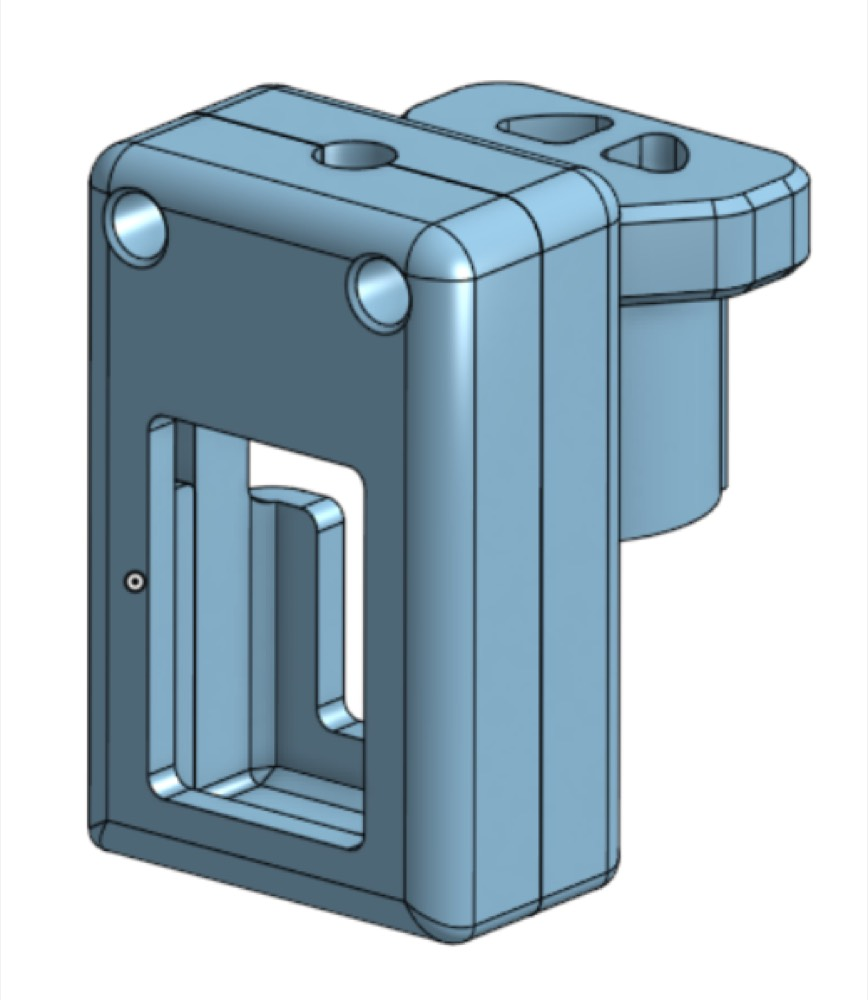
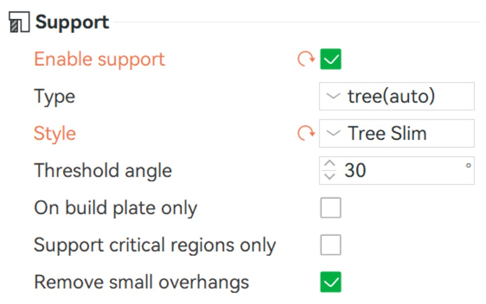
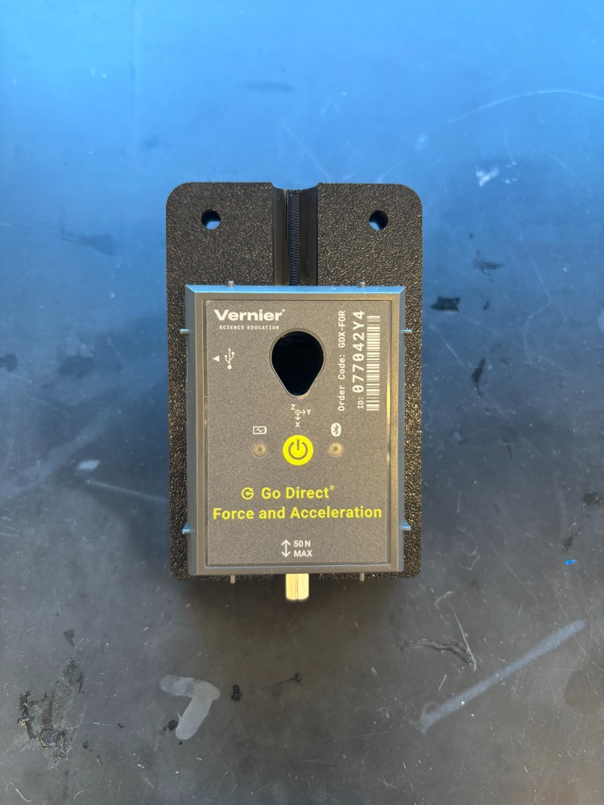
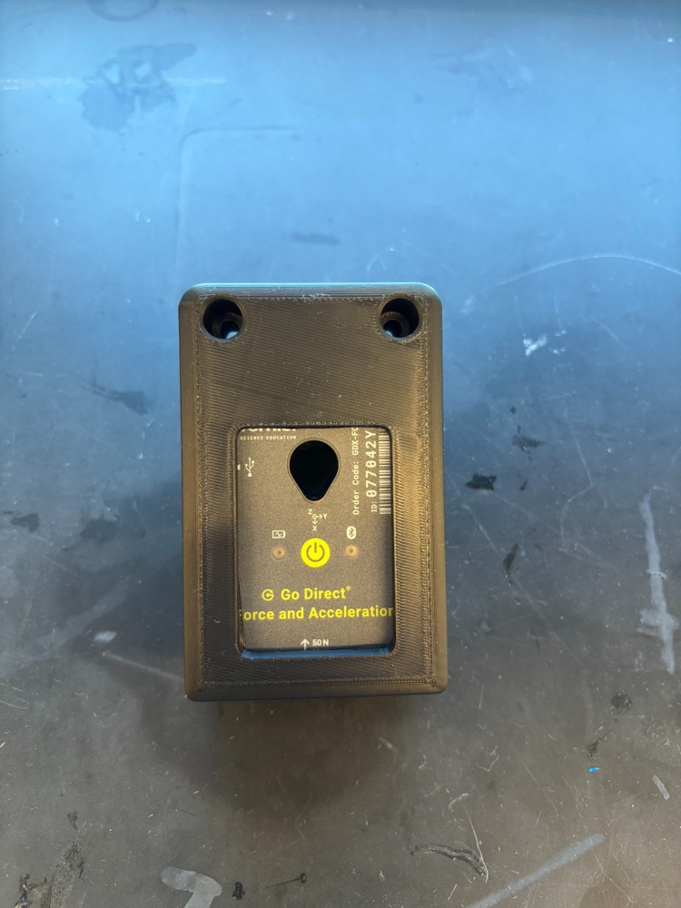
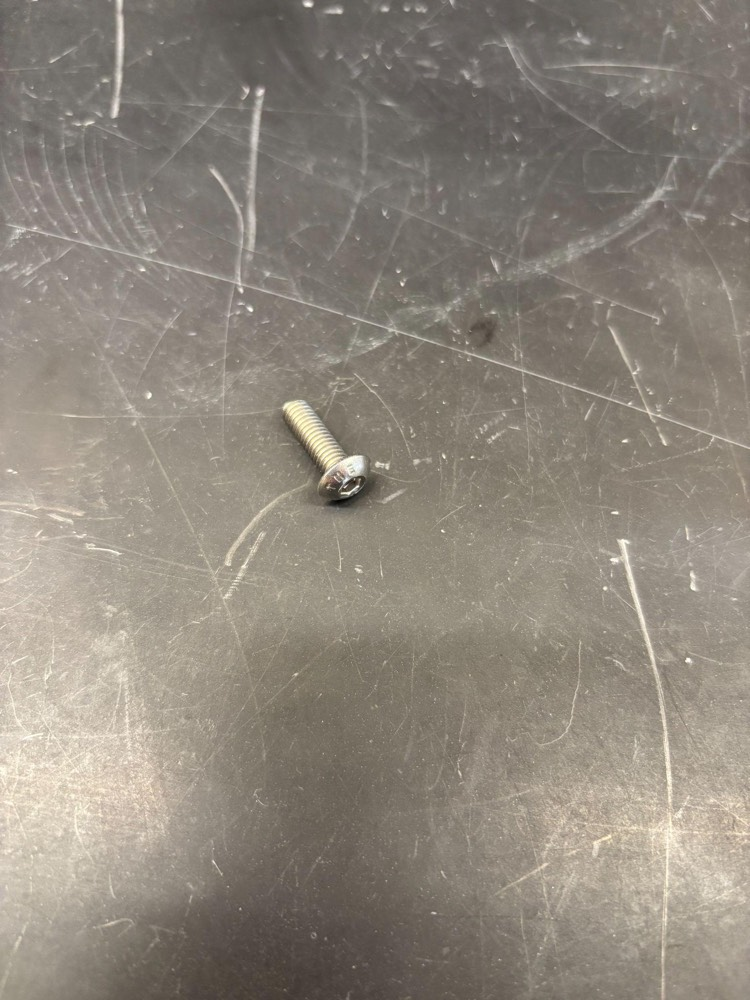
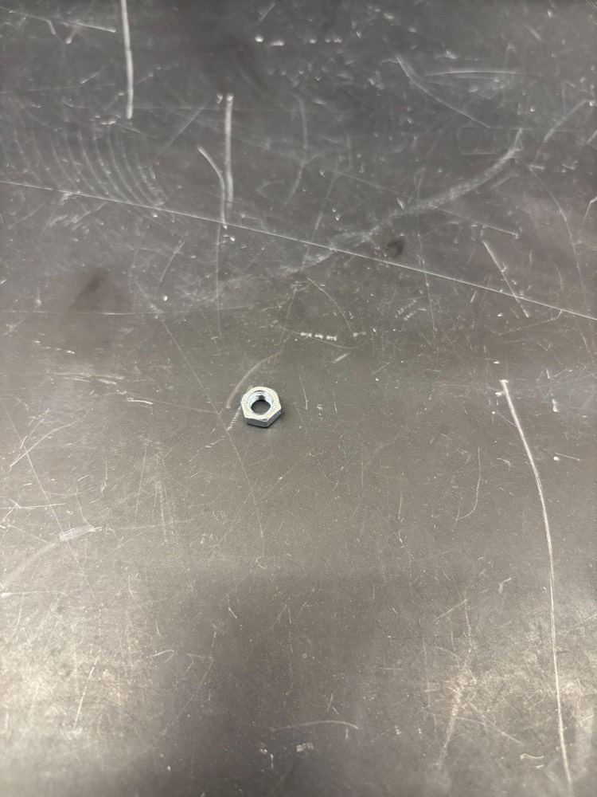
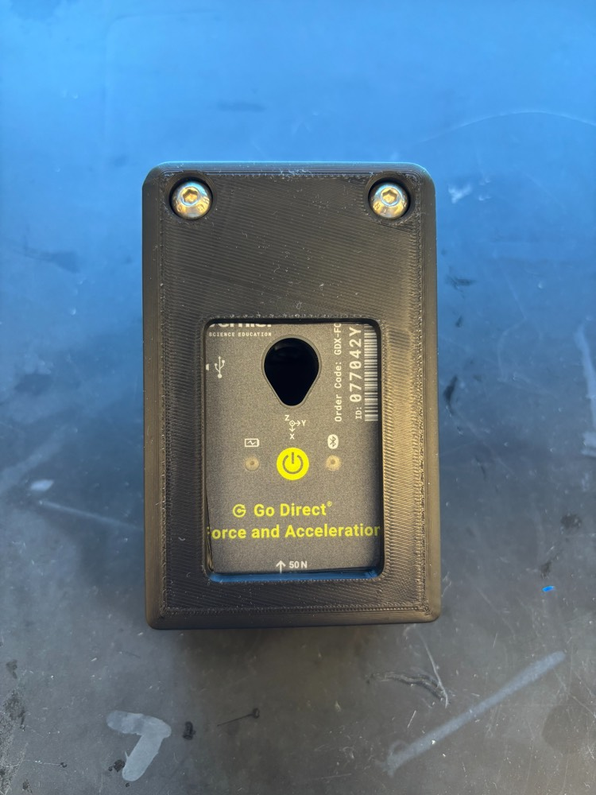
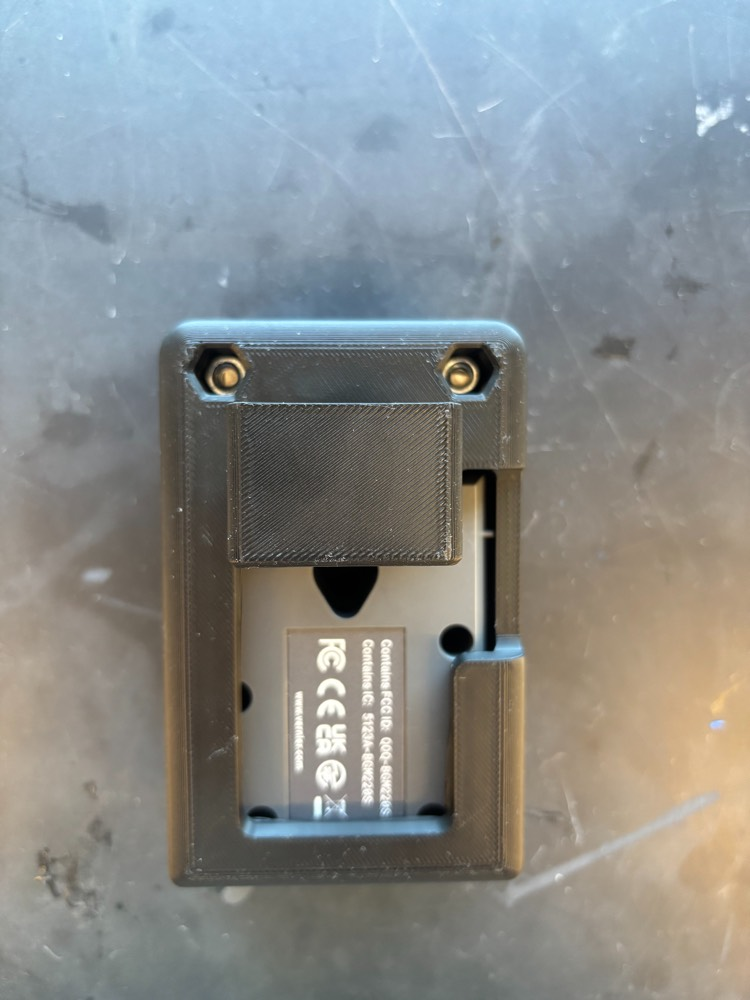
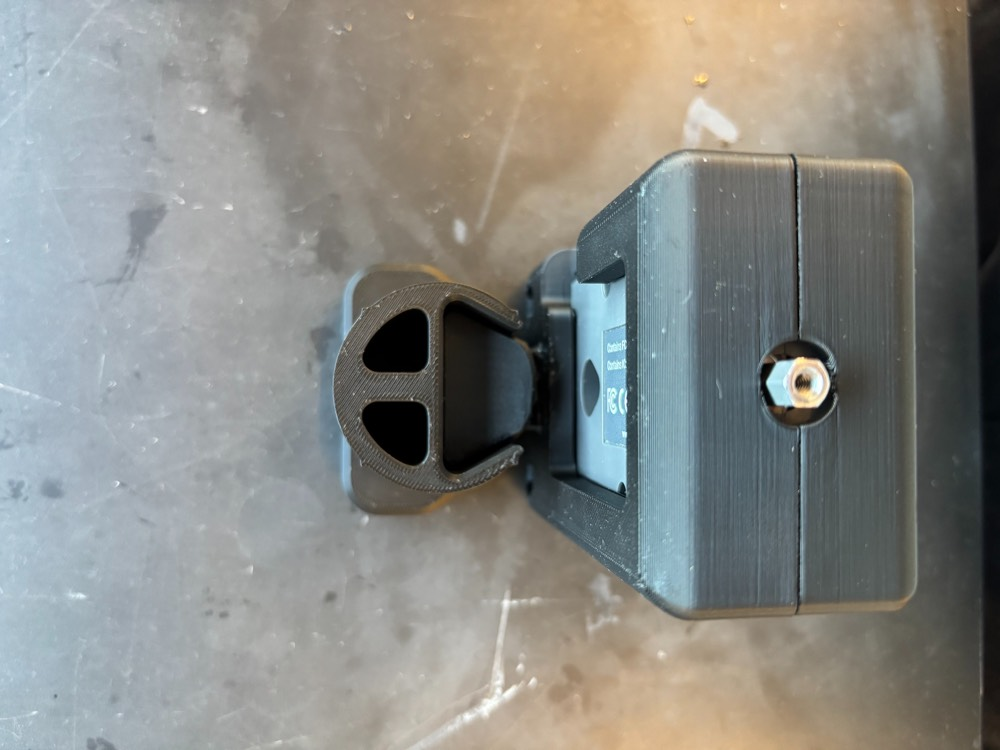
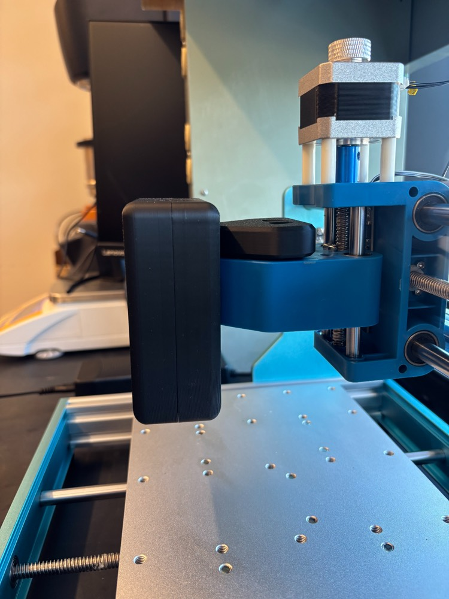

Part B of 6 · Cub + ASMI
Mount the ASMI force sensor
Clamp the Vernier force sensor in its printed mount and fit it to the gantry's Z axis. This is the ASMI's indenting head.
What you need
- Vernier Go Direct Force and Acceleration Sensor and its cable (Vernier)
- A 3 mm or 5 mm ball indenter
- Printed parts: Cub Vernier Go Direct mount base and cover, and the Cub 3018 mount (STEP files in Cubware, preview in the CAD viewer)
- 2× M5 × 15 mm button-head screws and 2× M5 hex nuts
- 3 mm Allen wrench (from the Genmitsu kit)
The mount has three printed parts: a base that holds the sensor, a cover that closes over it, and the Cub 3018 mount that slides into the gantry's round Z-axis clamp (where the spindle would go).
Steps
1Print the parts
Print the base, cover and Cub 3018 mount in PLA. Default settings work; the only change is to turn supports on for the overhangs (tree supports, Tree Slim style, 30° threshold). Our reference prints used a Bambu Lab X1-Carbon with Bambu PLA Basic.


2Seat the sensor in the base
Set the Vernier sensor into the rectangular opening in the base, oriented as shown.

3Fit the cover
Place the cover over the sensor and base.

4Clamp the sensor
Push the two M5 × 15 mm screws through the two holes above the sensor. Drop the two M5 nuts into the hex pockets on the back, then tighten the screws with the 3 mm Allen wrench until the mount is snug and clamps the sensor.



5Fit the indenter
Screw the 3 mm or 5 mm ball indenter into the sensor's threaded tip, whichever your test calls for. Finger-tight is enough.
6Attach the Cub 3018 mount
Line up the dovetail on the back of the base with the dovetail slot on the Cub 3018 mount and slide them together.


7Install on the gantry
Slide the Cub 3018 mount into the round clamp on the Z axis, pushing it in as far as it will go. Tighten the clamp screw with the 3 mm Allen wrench, then plug the sensor cable into the side of the sensor.

Check your work
- The sensor doesn't shift in the mount when you press on the indenter.
- The mount is pushed fully into the Z clamp and the clamp screw is tight.
- The sensor cable is plugged in and has slack across the whole travel.